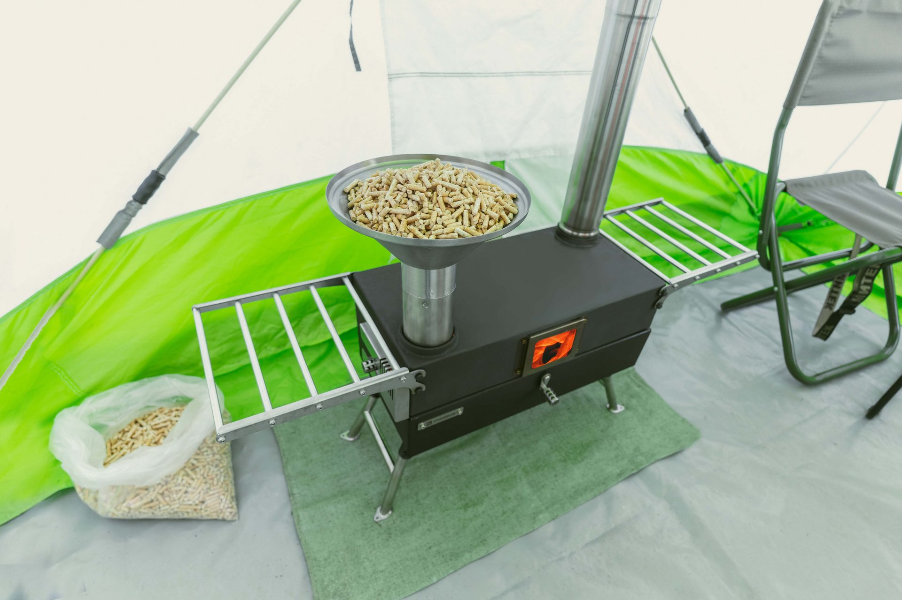
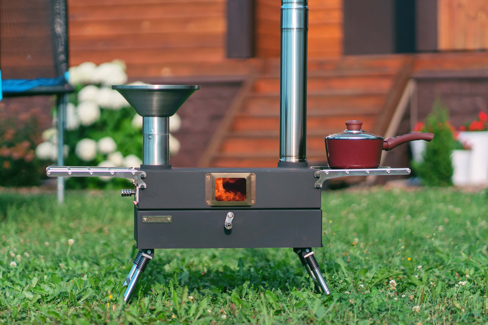

@@include('html/head.html', { "descr": "ПЕРВАЯ ПОХОДНАЯ ПЕЧЬ c духовым шкафом на пеллетах!", "keywords": "Hyggelig, походная печь, на пеллетах", "title": "Самая технологичная печь для автотуризма и обогрева палаток | Hyggelig", })
@@include('html/header.html',{})
Самая технологичная печь для автотуризма и обогрева палаток
Получи презентацию в телеграмм
перейти в тг


@@include('html/footer.html',{})
@@include('html/js.html',{})